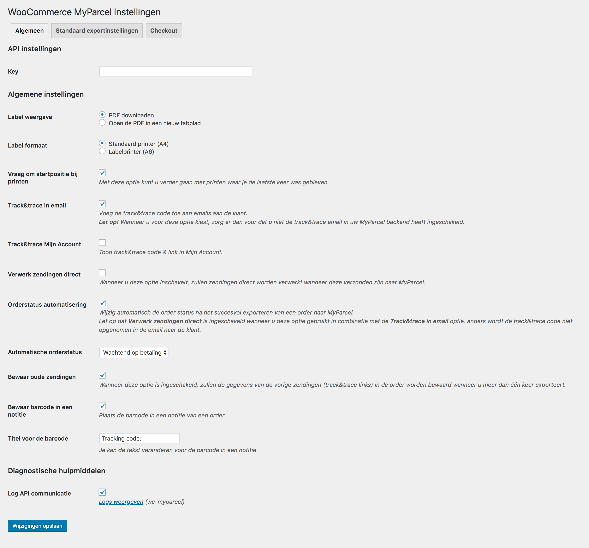
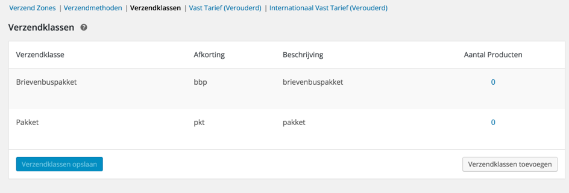
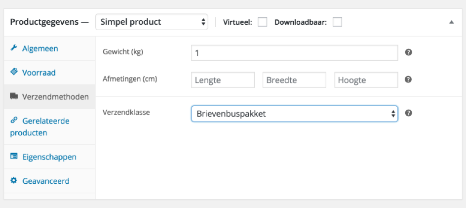
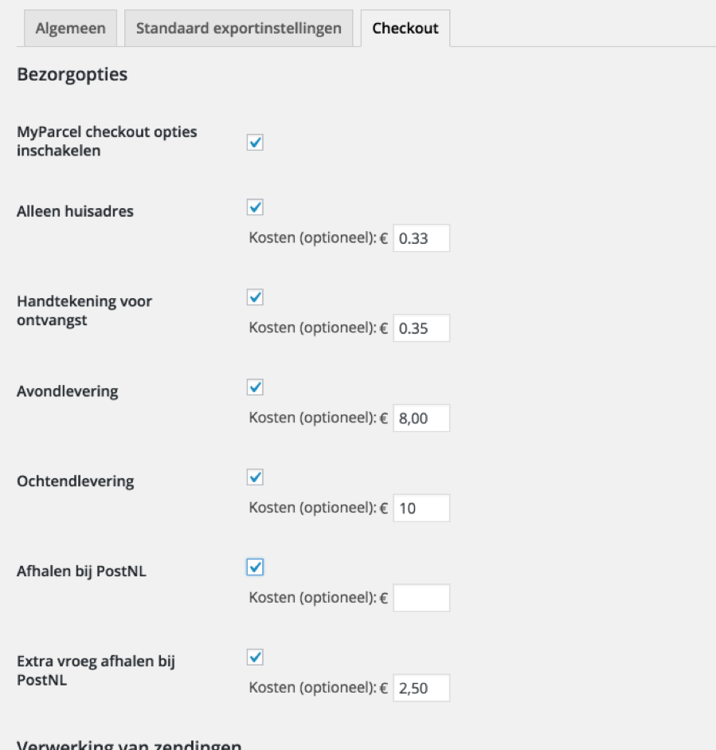
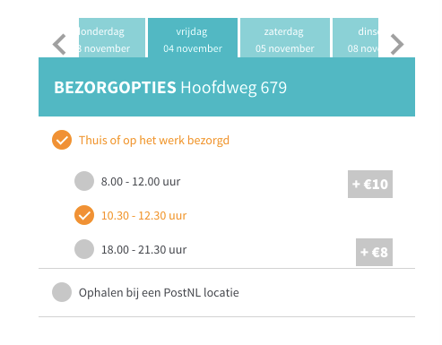
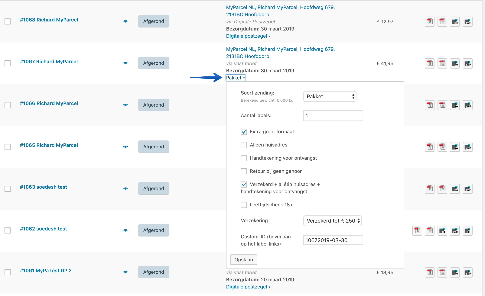
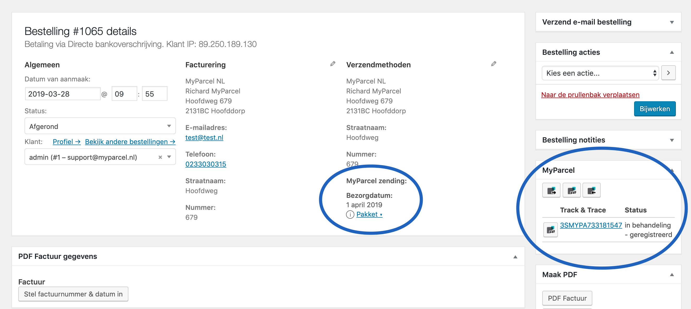

Inleiding
Deze handleiding beschrijft de functionaliteiten van de MyParcel plugin en hoe je de MyParcel plugin in jouw webwinkel kunt installeren. Wij adviseren om de plugin eerst in een testomgeving te installeren voordat je deze in jouw live webshop zet. De installatie kan op twee manieren worden uitgevoerd:
- Via de WordPress plugin directory
- Handmatig uploaden
Met deze WooCommerce plugin kun je drie soorten MyParcel zendingen aanmaken:
- Normaal (gewone pakketten en Ophalen op PostNL locatie)
- Pakketten zowel binnen de EU als buiten de EU
- Brievenbuspakje
- Ongefrankeerd label
Inhoud
1 Installatie
Wij adviseren de installatie altijd eerst op een testomgeving uit te voeren en een back-up te maken van jouw webshop voor je begint.
1.1 Via de WordPress plugin directory
Om de MyParcel plugin te installeren via de WordPress plugin directory volg je de volgende stappen:
- Ga in WordPress naar het menu Plugins > Nieuwe plugin.
- Typ in ‘MyParcel’ en klik op zoeken.
- Kies de plugin ‘WooCommerce MyParcel export’ en klik op ‘Nu installeren’. De plugin wordt nu gedownload.
- Wanneer het downloaden voltooid is, klikt je op ‘Plugin activeren’.
1.2 Handmatig uploaden
- Download de zip file van de plugin vanaf de WordPress site: http://www.wordpress.org/plugins/woocommerce-myparcel/
- Ga in WordPress naar het menu Plugins > Nieuwe plugin.
- Klik bovenin het scherm op ‘Uploaden’.
- Kies het bestand en klik op ‘Nu Installeren’.
- Wanneer het installeren voltooid is, klikt u op ‘Plugin activeren’.
1.3 Testen
Wij adviseren om jouw bestelprocedure eenmalig door te lopen om te kijken of alles naar wens is. Let hierbij vooral op de volgende aspecten: De MyParcel plugin voegt aan de checkout van jouw webshop extra velden toe die het mogelijk maken voor de klant om straatnaam, huisnummer en eventuele toevoeging afzonderlijk in te voeren. Op deze manier kunnen de adresgegevens zo nauwkeurig mogelijk worden vastgelegd. Omdat niet alle checkouts exact hetzelfde zijn ingesteld is het mogelijk dat de uitlijning van deze gegevens nog aangepast moet worden. Verder wordt er nadat er een etiket is aangemaakt ook een track&trace nummer toegevoegd aan de order. Wanneer de order binnen WooCommerce voltooid wordt, krijgt de klant deze track&trace code in de bevestigingsmail te zien.
2 Configuratie
Ga naar het menu WooCommerce → MyParcel om de MyParcel plugin te
configureren.
2.1 Algemeen
2.1.1 API instellingen
Om verbinding te kunnen maken met jouw MyParcel account is het noodzakelijk om hier jouw API-key in te vullen.Als je ingelogd bent in jouw myparcelaccount op backoffice.myparcel.nl dan kun je deze vinden in menu Instellingen → Algemeen.
2.1.2 Label display
Geef hier aan of je het label direct wilt downloaden of wilt openen in een nieuw scherm.
2.1.3 Track&Trace instellingen
Geef bij ’Email track&trace code’ aan dat het emailadres van de klant wordt meegestuurd naar MyParcel. Het emailadres wordt gebruikt om de Track&Trace mail te versturen naar de klant.
2.1.4 Diagnostische hulpmiddelen
Je kunt de diagnostische hulpmiddelen inschakelen op het moment dat er problemen zijn met het exporteren van de zendingen. In dit bestand wordt de communicatie tussen WooCommerce en MyParcel beschreven.
2.2 Standaard exportinstellingen
2.2.1 Standaard voorkeuren
Je kunt verzendmethoden koppelen aan een pakkettype, zodat het juiste label wordt aangemaakt in jouw MyParcel account. In het voorbeeld hieronder staat ‘Vast tarief’ dat wordt een standaard pakket.
Daarnaast hebben we de naam van de verzendmethode ‘Flat rate NL’ aangepast naar ‘Brievenbuspakket’ en deze is gekoppeld aan ‘Brievenbuspakje’. Dit betekent dat orders met deze verzendmethode als brievenbuspakje doorgezet worden naar MyParcel.
Als laatste staat ‘gratis verzending’, met deze verzendmethode wordt een ongefrankeerd label aangemaakt. Je kunt dit uiteraard ook weglaten of hier een andere verzendmethoden aan koppelen.
De checkout is nu ook gekoppeld aan deze verzendmethoden. Wanneer jouw klant voor de optie ‘Brievenbuspakket’ heeft gekozen zal de uitgebreide checkout niet getoond worden. Ook bij zendingen naar het buitenland wordt deze checkout dan niet getoond. De reden hiervoor is omdat de extra opties niet beschikbaar zijn in combinatie met een brievenbuspakket of een buitenlandse zending.
Let op! Het gaat hier om de standaardinstelling. Uiteraard kan dit nog per order handmatig aangepast worden.
Het is mogelijk om met 2 verschillende manieren verzendmethoden aan jouw producten te koppelen. Je kunt dit doen door te werken met verzendklassen. Deze kun je aanmaken via WooCommerce -> instellingen -> Verzendmethoden -> Verzendklassen.

Nu kun je producten toewijzen aan deze verzendklassen. Ga naar Producten in WooCommerce en kies het product dat jij wilt toevoegen aan een verzendklasse. Kies daarna voor Verzendmethoden en selecteer de gewenste verzendklasse. Deze verzendklasse zijn erg handig om verschillende verzendtarieven te hanteren. De verzendklassen worden automatisch voor alle landen aangemaakt en de prijzen kun je per land instellen.

De tweede methode is door middel van een extra plugin. Deze methode is wat betrouwbaarder omdat deze ook rekening houdt met meerdere producten in het winkelwagenmandje en deze de gewichten bij elkaar optelt. Je kunt met deze methode verzendkosten berekenen op basis van gewichten. Voor meer informatie over deze plugin kun je hier klikken.
2.2.2 Koppel emailadres klant
Je kunt de keuze maken om wel of niet het e-mailadres vanuit jouw orders mee te sturen naar MyParcel. Wanneer je het emailadres van de klant koppelt, kan MyParcel een Track&Trace email versturen naar dit adres. In jouw MyParcel backend kun je zelf deze email in-of uitschakelen en opmaken in jouw eigen stijl.
2.2.3 Koppel telefoonnummer klant
Wanneer je het telefoonnummer van de klant koppelt met de zending, kan de koerier dit gebruiken ten behoeve van de aflevering van het pakket. De afleverkans voor buitenlandzendingen wordt hiermee aanzienlijk verhoogd.
2.2.4 Extra verzendopties
Geef direct aan wat jouw standaard verzendopties zijn voor jouw zendingen. Je kunt hier kiezen voor extra groot formaat, alleen huisadres, handtekening voor ontvangst, retour bij geen gehoor en verzekerd verzenden. De opties die je hier aangeeft, kunnen bij het exporteren altijd per zending aangepast worden.
2.2.5 Label omschrijving
Met deze optie kun je een beschrijving toevoegen aan de zending. Dit zal worden afgedrukt op de linkerbovenhoek van het label en kun je gebruiken om de zending in het MyParcel zendingenoverzicht op te zoeken of te sorteren. Gebruik [ORDER_NR] om het ordernummer te vermelden.
2.2.6 Leeg pakket gewicht
Geef hier aan wat het gewicht van een leeg pakket is, afgerond op gram.
2.3 Checkout
Via het tabblad ‘Checkout’ heb je de mogelijkheid om meer verzendopties toe te voegen in jouw checkout.
2.3.1 Bezorgopties
Bij de verschillende bezorgopties is het mogelijk een toeslag in te stellen die voor de desbetreffende bezorgoptie doorberekend wordt aan jouw klant via de checkout.
Het is dus een toeslag op de standaardtarieven die je al hebt ingevoerd. In onderstaand voorbeeld zie je hoe deze toeslagen in de check-out terugkomen.

Je ziet bij de checkout instellingen nog 4 andere instellingen. Dit zijn ‘afleverdagen’, ‘verwerkingstijd’, ‘leverdagen’ en ‘sluitingstijd’. Op basis van deze instelling worden de juiste levertijden en –dagen getoond aan jouw klanten, gebaseerd op jouw manier van orderverwerking.
2.3.2 Verwerking van zendingen
Afleverdagen
Hiermee kun je aangeven op welke dagen jij het pakket afgeeft bij een PostNL locatie. Jouw klanten krijgen hiermee de juiste beschikbare bezorgdagen aangeboden.
Sluitingstijd
Met een sluitingstijd kun je aangeven tot welk moment van de dag de orders nog verwerkt kunnen worden. Als je elke dag rond 17:00 de bestellingen naar een PostNL locatie brengt is het handig om de laatste order rond 16:00 te verwerken. Wanneer jouw klanten na dit tijdstip een bestelling plaatsen zien zij een later levermogelijkheid. Bijvoorbeeld:
Sluitingstijd is om 16:00 en je kunt dezelfde dag de orders verwerken. Dan zal jouw klant als eerste levermogelijkheid voor 16:00 de volgende dag zien. Wanneer jouw klant na 16:00 besteld zal het de dag erna zijn.
Verwerkingstijd
Je kunt hier instellen hoeveel dagen jij nodig hebt om een order, die vóór jouw laatste besteltijd binnenkomt, te verwerken. Als je bijvoorbeeld 1 dag invult, zal er in de weergave in de check-out altijd rekening gehouden worden met het feit dat jij de pakketten dus niet morgen geleverd worden. Bijvoorbeeld:
De bestelling wordt geplaatst op 16 september voordat jij naar het PostNL punt gaat. Je hebt echter een verwerkingstijd van 1 dag ingesteld, dus de eerste mogelijkheid voor jou om het pakket in te leveren is dan 17 september. Jouw klant krijgt dan dus pas 18 september als eerst mogelijke leverdag te zien.
Leverdagen venster
Met deze optie kun je aangeven tot hoever in de toekomst jouw klanten een leverdag kunnen kiezen. In dit geval staat het op 10 dagen, maar dit kan natuurlijk ook 2 of 5 dagen zijn. Het maximum is 14 dagen.
Let op: PostNL houdt geen rekening met de gekozen leverdag van jouw klant. Je dient zelf zorg te dragen voor het op de juiste dag inleveren van jouw pakket.
3 Orderoverzicht
In het orderoverzicht kun je eenvoudig zien wat voor zending de nieuwe bestelling betreft. Ook kun je heel snel het pakkettype wijzigen indien dit gewenst is. Wanneer je op “Pakket“ klikt verschijnt het venster eronder, hierin is het mogelijk om verzendopties uit te schakelen of juist toe te voegen of het soort zending aan te passen.
Na het kiezen van jouw gewenste opties of het wijzigen van het ‘Soort zending’ klik je op ‘Opslaan’ en daarna kun je deze keuze doorzetten naar MyParcel.

Je kunt op 2 manieren jouw orders doorzetten naar MyParcel en hier vervolgens een label voor uitprinten. Namelijk door een order (of meerdere orders) te selecteren en vervolgens naar Acties te gaan. Daar kun je jouw keuze maken Exporteren, Printen of Exporteren en Printen. Ook kun je per order een zending aanmaken, dit kan met het icoontje achter de gewenste order.

4 Orderdetails
Uiteraard is het ook mogelijk gemaakt om zendingen vanuit de order detailpagina zendingen aan te maken. Door op een order te klikken kom je op een pagina waar meer details over deze bestelling te vinden is.
5 Zending informatie
Als je informatie over jouw zending wilt zien is het niet nodig om dit te bekijken in jouw MyParcel account. Je kunt deze informatie bekijken in jouw order overzicht in WooCommerce.
Bij elke order die wordt doorgezet naar MyParcel en waarvoor een label is aangemaakt komt een ‘I’ te staan. Door hierop te klikken wordt er meer informatie getoond over de status van de zending.